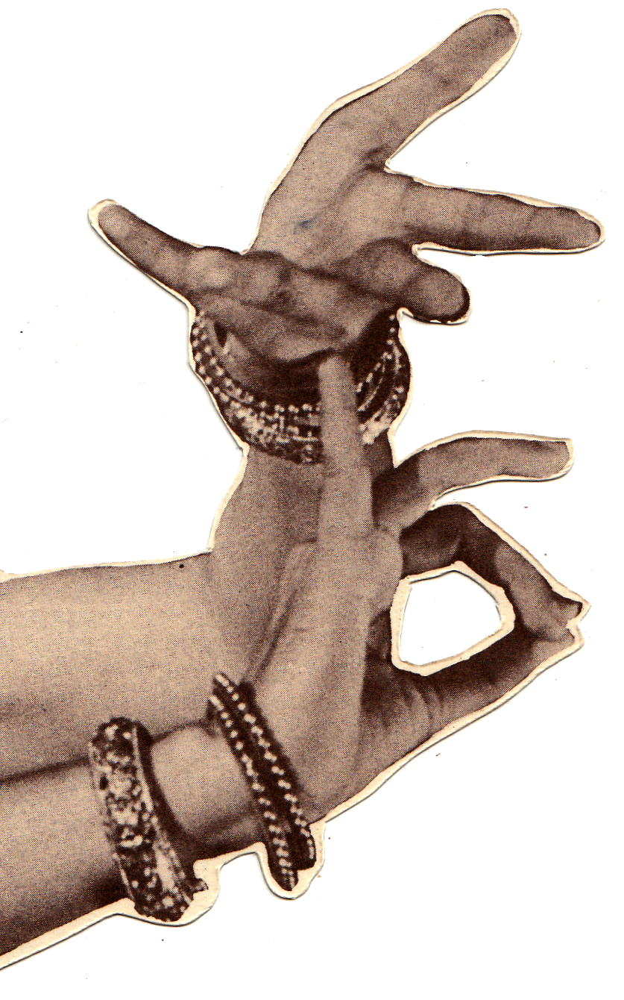
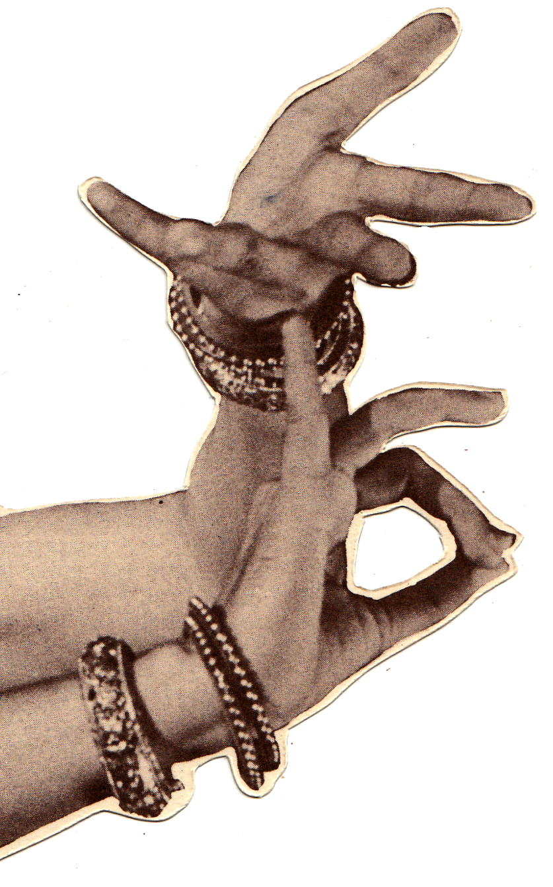

Shastriya Nritya
Traditional Indian Dance
Shastriya nritya is a Sanskrit term that describes Indian classical dance and performance arts. Shastriya is derived from the Sanskrit word shastra, or “science.” Nritya translates as “dance.” Traditionally, the Indian performing arts (dance, drama and music) have been studied and analyzed as a type of science.
Rooted in Hindu musical theater, shastriya nritya uses symbolism, gestures, facial expressions and pantomime set to music to tell a story and convey a mood. Even the props, clothing and makeup color have symbolic significance, all understood by the audience.